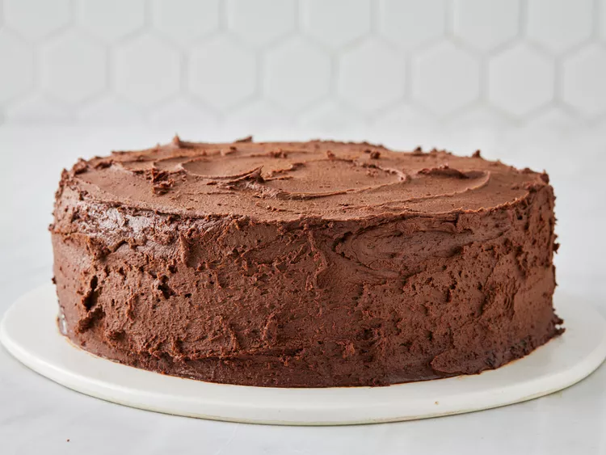

Cakes!!

Ingredients:
- 2 cups white sugar
- 1 and 3/4 cups all purpose flour
- 3/4 cup unsweetened cocoa powder
- 1 and 1/2 teaspoon baking soda
- 1 and 1/2 teaspoon baking powder
- 2 teaspoon salt
- 2 large eggs
- 1 cup milk
- 1/2 cup vegetable oil
- 2 teaspoons vanilla extract
- 1 cup boiling water
- 3/4 cuup unsalted butter
- 5 and 1/3 cups confectioners' sugar
- 1 and 1/2 cups unsweetened cocoa powder
- 2/3 cup milk
- 1 teaspoon vanilla extract
Steps:
-
Preheat the oven to 350 degrees F (175 degrees C). Grease and flour two
9-inch round cake pans.
-
Make cake: Stir together sugar, flour, cocoa, baking soda, baking
powder, and salt in a bowl.
-
Add eggs, milk, oil, and vanilla; mix for 3 minutes with an electric
mixer. Stir in boiling water by hand.
- Pour evenly into the prepared pans.
-
Bake in the preheated oven until a toothpick inserted into the centers
comes out clean, 30 to 35 minutes. Cool for 10 minutes before removing
from pans to cool completely.
-
While cakes cool, make frosting: Cream butter with an electric mixer
until light and fluffy. Stir in confectioners' sugar and cocoa
alternately with milk and vanilla. Beat to a smooth spreading
consistency.
-
Split the layers of the cooled cake horizontally, cover the top of each
layer with frosting, then stack them onto a serving plate.
- Frost the outside of the cake with remaining frosting.
Back to homepage